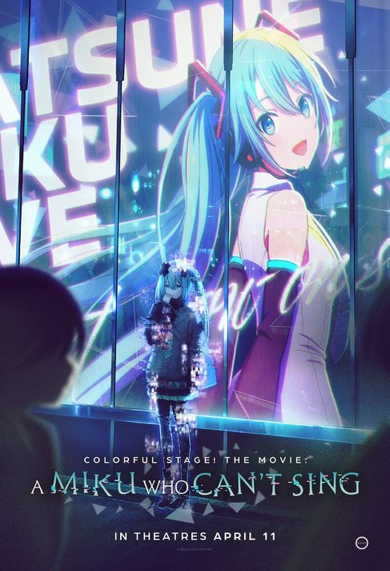
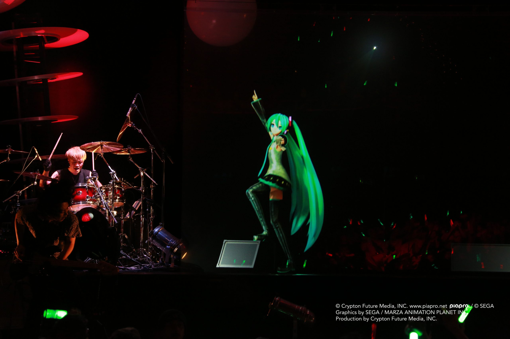
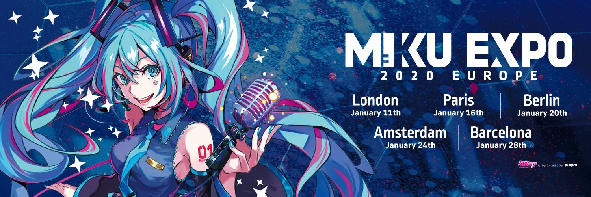

❖Hatsune Miku❖
««««Hiding in your WiFi!~»»»»
Hatsune Miku is a voicebank.
Basically, her voice is an instrument that one can use in songs. She is
mostly known for being a singer in songs made (mostly) by vocaloid
producers, a.k.a those who specialize in making songs using voicebanks.
The character you see above is simply Miku's mascot, since she isn't a
real person!
❖Achievements and Last Seen❖
Last seen in: Colorful Stage! The Movie: A Miku Who Can't Sing

Context: Colorful Stage/Project Sekai is a rhythm game starring vocaloids, where most of the songs are made using vocaloids.
Special Event: Performance at the 2024 Coachella!

Context: Hatsune Miku was in the lineup to perform at Coachella alongside artists YOASOBI and ATARASHI GAKKO.
Popular Events: Miku Expos!

Context: Miku Expos are held yearly as a world tour. She has performed in parts of Europe, The Americas, and Asia.